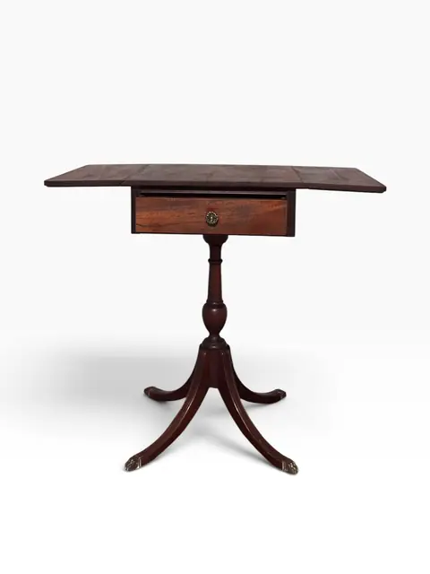
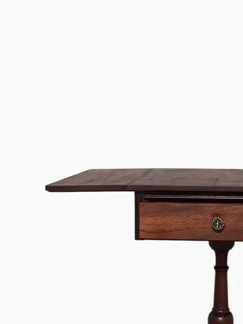
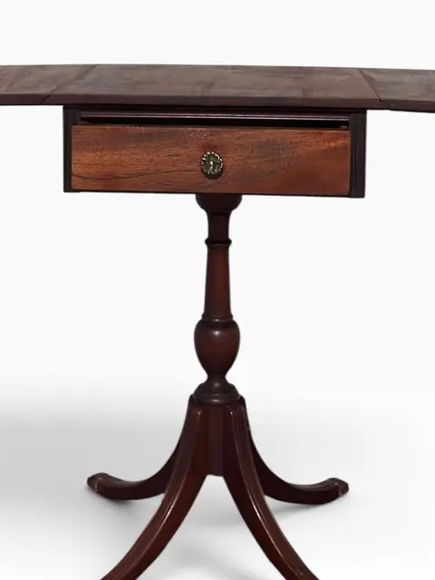
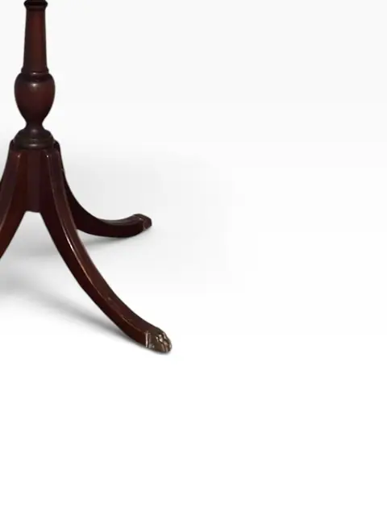
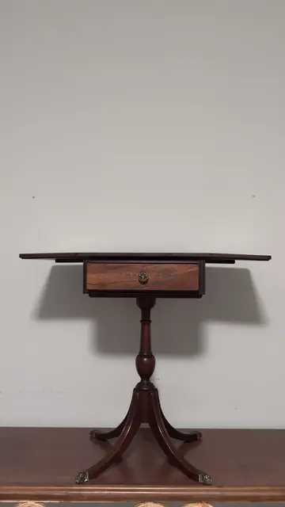
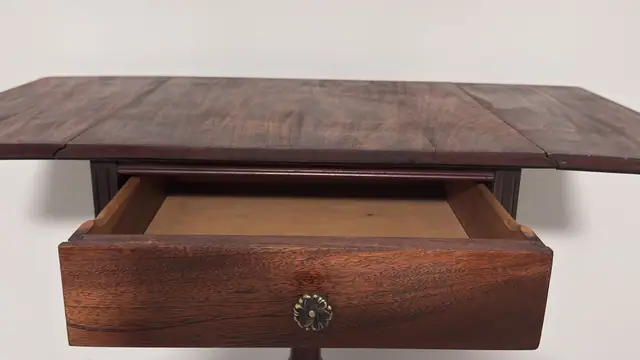
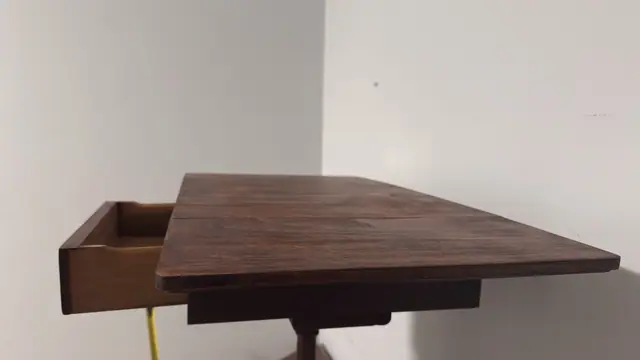
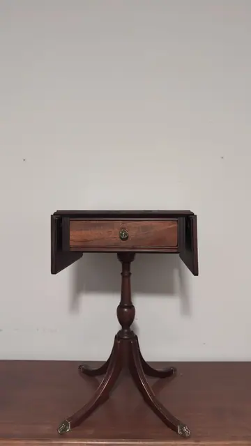
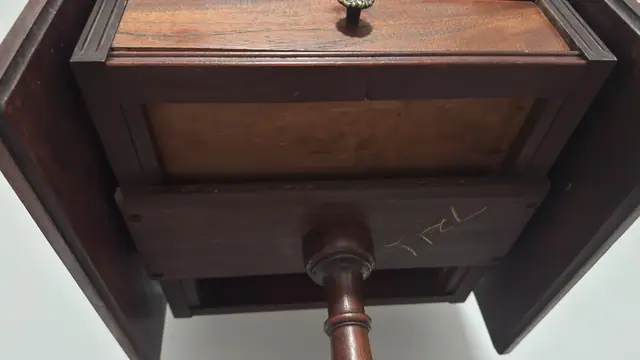

Handmade Objects
Federal-Style Mahogany Drop-Leaf Pembroke Table
· 20th century
Price Upon Request









About the Item
A Federal-style mahogany Pembroke table with drop leaves and a single drawer with brass knob, raised on a turned pedestal with a tripod base ending in brass casters. Opens to a generous oval top; leaves down it serves as a slim console. A classic early-American form. Chalk-like writing on underside is a stock/price notation, not a maker. 20th-century reproduction in Federal style.
Details
- Creation Year:
- 20th century
- Medium:
- Mahogany and brass
- Period:
- 20Th
- Condition:
- Offered in the condition shown in the photographs.
- Reference Number:
- VO-360